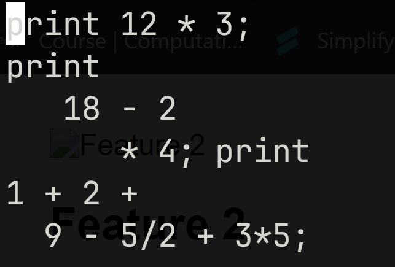

Syntax
The llc language is simple to use and learn. The compiler can ignore spaces, tabs and newlines
Math
LLC can do math!

Results
Well the math is right atleast!
Simple language with it's compiler
The llc language is simple to use and learn. The compiler can ignore spaces, tabs and newlines
LLC can do math!
Well the math is right atleast!
Welcome to the LiteLangCompiler project, a venture undertaken for the sheer joy of exploration and learning in the realm of software engineering. This initiative was fueled by a passion for coding and the pursuit of knowledge, with the primary goal of gaining hands-on experience in crafting a compiler for a lightweight programming language.
LiteLangCompiler is an endeavor born out of a desire to delve into the intricacies of compiler design, applying theoretical concepts into practical implementation. The inspiration lies in the curiosity to understand the inner workings of programming languages and compilers. It serves as a playground to experiment, make mistakes, and, most importantly, to learn from those mistakes.
LiteLangCompiler proudly stands as part of the portfolio for Holberton School, a space where acquired skills and projects are showcased